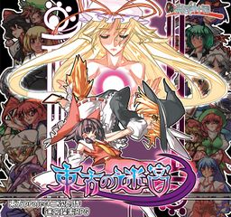

- Welcome to Touhou Wiki!
- Please register to edit. For assistance, check in with our Discord server or IRC channel.
Labyrinth of Touhou
Labyrinth of Touhou | |
|---|---|
|
 | |
| Developer | |
| Publisher | |
| Released |
June 30, 2009 |
| Genre |
Role-Playing Game |
| Gameplay |
Single-player story mode |
| Platforms |
Windows 2000/XP/Vista (Will not run properly on Windows 10 upgraded to version 1709 or later) |
| Requirements |
CPU speed 1.30GHz, VRAM48MB or more. |
Touhou no Meikyuu (東方の迷宮, lit. "Labyrinth of Touhou"), also known as Touhou Labyrinth, is a fan-made Touhou Project-centric dungeon crawler with similarities to titles such as Wizardry or Etrian Odyssey. A large cast of Touhou characters are included, as well as a number of references and cameos of other role-playing, anime, and danmaku titles. A sequel, Labyrinth of Touhou 2 was released at Comiket 84.
Gameplay[edit]
The main gameplay of Labyrinth of Touhou takes place within a 20-floor dungeon (30 with Plus Disc), which characters explore by moving a Reimu Hakurei avatar around a large map of each floor, discovering events, boss battles, and all sorts of objects to interact with. The game uses a team of 4 characters, although 8 more can be brought in reserve into the dungeon at a time, that can be swapped in and out of battle. Successful selection and management of the team, as well as use of their individual (and fixed) abilities, is key to survival.
Story[edit]
After an extended stay at the Scarlet Devil Mansion, Reimu Hakurei has failed to notice that the boundary between Gensokyo and the outside world has begun to fall apart, and only realizes it when a huge rift in space opens above them. Accompanied by Marisa Kirisame, Remilia Scarlet, Sakuya Izayoi and Patchouli Knowledge, she begrudgingly goes to explore the mysterious dimensional rift so that she may continue lazing around without distractions.
Additional information[edit]
東方の迷宮 プラスディスク[edit]
Labyrinth of Touhou Plus Disk was released August 15th, 2009, at Comiket 76. It adds additional floors, characters, equipment, and challenges far beyond what the original game offered.
東方の迷宮 Special Disc[edit]
Labyrinth of Touhou Special Disc was released June 20th, 2010. It contains both the main game and Plus Disk in one package, and adds some additional bonuses and bugfixes.